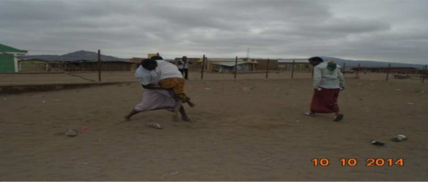
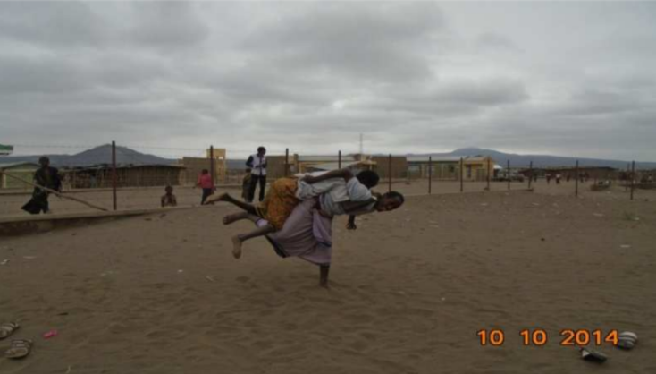
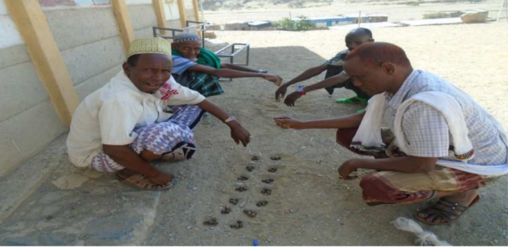
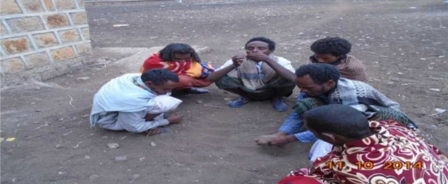
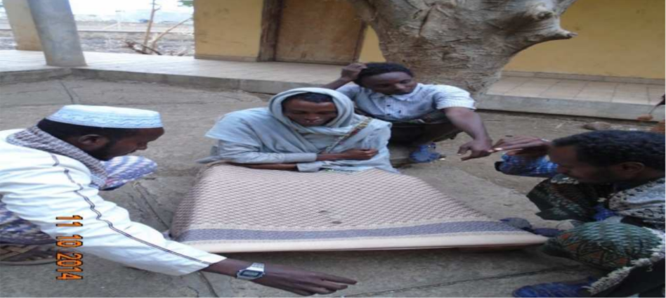

Qafarak qaada digiritte:
Qafar koqoso:
Baxaabaxsa leh tan kedoodak awaquk namma dokonih fanat yakkeh cayla kee qoofe-wayti sinaamak elle fokkaaqaanah yanin digir kinnih yan waqdi, qaagitak sissik arda abeyna takkem kok faxxa.
Karma 18-27 akak takkeh tan qunxaaneyti abah yan digir kinni. Ellacabol yekkeh yan digir katattah tan baaxoh idoola mayso beyteh tan dokon warisak ximmo yaysixxigen. Naharal akah innennah karma akak 18-27 yakkeh yan marak sugteeh, awak kaadu karma 26-46 akak takkeh tan mari digraanam xiqtah.
Qaadal kaadu digrah yan num kah aben aracak/booxak eroh sara haam digir maqdal waaso le.
Toh abe kaa tekkek maaqatta kaal beyan.
Aracak iroh sara heewaam digrah yan numuh leh tan nafaqi koqoso luk kudah yan waqdi aki dokonih mari xayuk kaa mayabbixan.
Qafar ummattah addal koqoso eyyaanam qaadâ bilqa axcuk yaamineenimih sabbatah ummattah addal kaxxa hangi akah yacen.
qafar koqsoh digir elle qembisen inna:-
Qafar koqso hununuh edde qimbisen uddur amixxige waamah baaxoh idoola elle intannal a digir qembiseenimih mango uddur yani yan.
Asmatah tamixxigeemih a digri horaak horal tabaatabak yemeeteh yan digir kinni.
Qafar koqso ayyuntiinoh angaaraw diggoysoonuh,siitah siita qokloonuh kee ayyunti siita yakcineh gideh kaxxa doorit le.
Qafar koqsoh hadaf:-
Qafar koqso uxxuuk namma hadaf le;-
1. Qiddi ayroora qiddi farcatal qid qax-muquk yassakaxxoonu kee qunxaaneyti edde waycaysir abah gide.
2. Digib uddur digib qax-muquk yakkeh gideh
qafar koqso edde digran uddur:-
Qafar koqso digri mangih edde digraanam karmah udduru iroh yan wakti
axcih gilal uddur kinni.
Toh kaadu saqi karma roobut tooboke qaysoh edde cayyah yan wakti
kee buqre abittam kaadu darqi edde orbisan wakti kinni.
Koqso digri yakkem namma fiqima/dokon/ siitingey abta waqdi.
Ta ayro digrenno axcuk ayro yargiqen.
Ayro edde yargiqeenih xagan siitah haanam tuful xiqsitta.
Too ayro kulli dokon/fiqma/ isi adoyttiitih digri edde yakkuwaah
yan ayro warisak bicsitak akah sugan innah xaagu siitat qidan.
qafar koqsok elle digiraanah yanin adabi:-
Qafar koqsoh digir abaanah yanin waqdi namma dokon booxal oobaanak naharak elle haan silac kee sartan inkih oobissah heenih taal kee butantat gacan.digri qimbisan waqdi inaytak qimbisan. Inayta akah yeceen num foqot hayya heeh gabat yabbixe koqso qaranat atukka heeh digir qimbisa. Qafar koqsol digirit yangale marih ixxima caddo mali. Kulli fiqma isih duddah gideh adoytiitik digiirin tassagallem duddah.
Qafar koqsoh qaynatitte:-
Qafar ummattah addal koqosok baxaabaxsa le innah iyyan.
1. Radoyta
2. Feereyta
3. laloyta axcuk baxsan.
Radoyta ;- Ummattah addal fayxi akah loonuh yanin qafar koqoso waginnah nan waqdi, tama koqoso baxaabxsale gurral takkem bictah.Ceelalloh; fiqma kee fiqmah fanat gexsittaah, kedoo kee kedooy, daqortih fanat takkem bictaah, rasu kee rasuuy, tonnah kaadu agat kee agat fanat takkem bictah.Ta- koqoso raddaamak naharal, digir faxxah tan dokonitte hinnammay kaadu digir faxxah tan fiqmak abbah yan num gexak siinilluk koqoso digirnam fanna axcuk lih digraanam faxaanah yanin fiqmah abbah luk aban xagana kee essero ken luk digiraanamih fayxi taybulleh tan tiya kinni..
2. Fereyta:- feereyta waginnah nan waqdi nammay nammay akkuk afarra num abah yan digiri kinni. Fereyta akah yaaxigen/yabbixen/ wakti maliiy, digir duudah yan fayxi akah lon waqdi kee keenit bicinnaan uddur fereey akkuk nammay kee nammayah baxsimak/kurruumak abaanah yanin digir kinni.Digir irook wagtah yan marak, digir faxah yan mari yenek akak yeysen nammay yawqeeh, aki nammay cigiilak digraanam duudaanamih fan digraanam xiqan digir kinni
3. Laloyta:- eyyanam qafar ummattah addal geytimtah ummatta wacaysir kee wakti rubsuusuh abaanah yanin digirwak digirik teyna kinnuk labha lee elle tanih tan dareefal ken digrissam duddah tan lee geyan waqdi kee buxaaxi lee elle tan dareefal tacdureh tan waqdi namma buttah gacak wakti rubsuusuh intih yanbulleh gabak anabbewaa caxxa leel qidak aban digir kinni. Digir elle yakkenna waginnah nan waqdi, namma buttak buttakteenâ num caxxa leek addat culussu heek lakal caxxi akak yawqekke wagtan. Yawqeh yan waqdi afal yubleh yan num caxxa moddinat abbixak giirul caxxa luk gufam Faxximtah tan arac fan luk gexah yan waqdi aki buttah mari caxxa leh yan num giirul elelli heenih leet kaa kummuseeniik kaa yibbixeenimik loowimtaamih sabbatah keenih maloowimtay qusba digir qimbisan. Amo akak gacisnah nan waqdi laloyta tamannal abaanah yanin digir kinni.
Qáfar cayla:-
qafar cayla kak yaanam qafar ummattah addal ummatta wacaysi kee wakti rubsuusuh edde tantiffiqe digirwak digiirik teena kinni.Tonnah kaadu isil taamineh anaakar leh tan labhak iyyi iyyak gacam kee yaysem elle yaaxigoonuh qeebiy tonnah kaadu baxaabaxsa le cayla kee cogdaadi edde tanih tan digir kinni. Qafar cayla iyyan waqdi mango cogdaadi leh yan digiri kinni.Toh innah nan waqdi, qafar caylah edde xoqoysiman cogdaadik tuk teena ahaak gubal ablenno.
Culsa

Nahartu - iyyaanam fillal ugsaanam kee inkih yan dagar kaak ukkuqu heenih yankiseenimi:-

Darreytu- kak yaanam iba ibat calkaanama/addatiya kak iyyen cogda.:-

Axcaytu:-yaanam num axcal ukkuqqa heenih yankiseenimi:-

Xaabûxa:-
Xaabûxa:- kak yaanam qafar ummattah addal tatreh yan warguk qimbissi heenam kee aham fan abbaak baxal tabaatabak/horaak horal tabak temeeteh tan digirittek tiyak teyna kinni. Ta digirih caxxak bicseenih yanin digreenay hinnay kaadu ardi 20 takke boodo leh yani hinnammay kaadu baaxo bagul 20 boodo cotak kulli boodot afara (4) xetta (arraqtu) elle daffeesak gura kee migdak gacak namma num abah yan digir kinni. Wacaysirih (holkatah) ummatta wakti edde rubsussah tan digir kinni. Xaabûxi ummattah yaceeh yan tuxxiq waginnah nan waqdi sehdayti baxi inki caagidik cisab/ixxima elle yaaxigoonu hinnay kaadu tuk teynak qadad akkee kee wonnah ixxima yaaxigoonuh kaxxa doori leh yan digir kinni.
Xaabûxa 
Ku laa cabek yi laa cab:-
Ku laa cabehik yi laa cabeey:- eyyaanam qafar ummattah addal holkat kee wakti rubsuusuh ummatta abtah tan digirik tiyak teyna kinni. Ku-laa cabehik yilaa cabey iyyanamak maqna waginnah nan waqdi kulaa eyyanam isih ku laa yaanam kinnim kee yilaa eyyanam isih yi laa eyyanam kinni. Amolladih maqnisan waqdi ku laa cabehik yi laa cabeey eyyaanam kinnuk labha kee sayyo namma buttah gacak namma butta inkih isi miraacisa num dooreniik lakal inki butta aki buttak isi laa yoqoreenim ascabuk digir yakke.Migaq akak laa innay ekkah coox darret gexak fiirisen fiiro sittak aaqaruk digran.Tohuk sarra sittin geyil inki butta gexak sidiica axacal ballaqeh addat yaaqureenim lon. Tohuk lakal yadureenih raaqeh yan mari (butta) gexak gunnusak yooqorenih yanin laak geyaanah yanin laa bayseenik sarra geenim kee weenimit yaabak inkih geen ken tekkek aki buttah maloowimta geewen tekkek keenik raqteh tanim warisak tooqoreh tan buttah loowimta. Qagitaak kaadu raqteh tan butta gexak naharsi butta akah abtennah isi laa aaqaruk aki butta laa keenik bayisak yaduureniih, tohuk sarra garkura tokke fan gexak inkih keenik geenim loowan hinnay kulli buttak bayse ween fiiro hinnay sittak geeween laa garkura lowtaah, fiiro/laa/ixximah akak magguk suginnaan butta keenih warsak maysole butta yaybeleeleqen.
Xakka:-
Xakka:- eyyanam qafar ummattah addal wacaysir kee wakti rubsuusuh aban digirwak digirik teena kinnuk adigir elle aban inna waginnah nan waqdi xakka nadô baxsa sinnim labhaa kee sayyo sittaluk abtah tan digir kinni. Xeflih laba karma tan wakti hinnammay qayso geyan waktii kee alsa tawqeh tan waqdi booxal namma buttah kurruumak xakka akak axcuk sinam biyaakewaah yan caxxa qidak aban digir kinni. Inki num Too caxxa duudah yan gide qambisek sarra namma buttah digir abeenit inkih caxxi elle rade katu fan sissikuk yarden.Macaay inteenik qambiseenih yanin caxxa sittak ookomma heenih akah ugsan innah, geeh yan num geem warsekkah caxxa luk kuda. Anke luk kudaah? Inta essro ugussaanam raq Mali, ta esserok gacsi inayta (arkeena) axcuk migaq akah aban arac fan luk kudan. Luk kudah yan waqdi usuk qoofek kay buttah numul acayuk tonnah kaadu elle yecen num aki numul acayuk kudaanah yanin waqdi aki buttah mari too caxxa luk arkeenah arac fan gufse ken kalan. Caxxa gabat leh yan num qoofeh yinnikisek hinnammay caxxi baaxo kaak xagek, too ximmo keenih maloowimta. Toh akke- waytek ken abbixekal arkeena gufsen keen tekkek iniki axcuk keenih loowimta. Ta digir, digir abeenit anaakar elle yanbulleenih yanin sissik arda abeenit elle tanbulleh tan digiriiy koqsoh innah cayla kee ufuy faxxah yan digir kinni.
Baxqisi:-
Baxqisi:- kak yaanam qafar ummattah addal wacaysir kee wakti rubsuusuh aban digirwak digirik teena kinnuk baaxô bagul xaabûxi boodoh innah boodooda akah cotak namma num abtah tan digir kinni.Takkay ikkah xaabuxxak baxsa le.Baxsa elle lem, xaabûxi mango xeetil (arraaqil) aban digir kinnim kee baxqis tonnah inki arruqta gabat nabbixeeh, baaxok siisa (ballaaqe) harigak arraqtu kee ballaaqe sittaluk boodol haak aban digir kinnim kee arruqta kee ballaaqe boodot caxeeniik lakal qari intaa, gabanta axcuk sitta esserak aban digir kinni.

Baxqisi
Toolaci:-
Toolaci:- kak yaanam qafar ummattah addal wacaysir kee wakti rubsuusuh gexsan digirwak digirik teena. Toolaci- kak yaanamak maqna waginnah nan waqdi isih toolaca eyyaanama. Digir elle gexsiisan inna waginnah nan waqdi labha abtah tan digir kinnuk keena qambisak qilaamah danan aytit haanama. Qafar ummatta adigir abtah tan waqdi wakti rubsus kee wacaysirih dibuk hinnay qilaama barittoh aban digir kinnim tascasse. Ta digiril qilaama barteh yan num, gaba girat tu qidam faxek gira diissi heeh hoxisak masuginna.Tohuk amakkaquk ummattah qilaama le katuk doori leh digir kinni.
Xaahi Qambo:-
Xaahi Qambo:- eyyaanam qafar ummattah addal tan digirwak digirikteena kinnuk xaahi qambo, xaa qambisak aban digir kinni. Ta digir labha gaabowwu haytah yaaxigen arac akah xabba haanah hinnammay kaadu tuk-teyna akah daffessi haanah tokke xaa eyyi eleelisa axcuk anaakar ayballuk aban digir kinni. Nammay haak kaadu a digir yakkeh yan waqdi Sihadayti dagar kaak qaafiyatah yanih inna, mayanay intah tan tiya elle yaaxigeenih yanin digir kinn. Toh innah nan waqdi, toh mannal takkeeh? Intah tan essero uguttam raq mali. Inki num dagar kaak qaafiyatah aneweek, xaa qambissa heeh eleelisam faxximtah tan arac gufsam maduuda.
Luule:-
Luule:- Iyyaanam qafar ummattah addal gexsittah tan digirwak digirik-teena kinnuk yaaxigeh (mihrat) yan num bicsah yan maro kak qastiya celsissi heenih bicseenih yanin xaa inki num sarok exxak-teena namma ibatteh feeraarit xabba haah aki exxa daffeynal gulub kee bagi fanat abbaxuk ibbatte rubba haak sarra bicseenih yanin xeetik tiya tiya abbaxuk woo saroh bagul qidak abaanah yanin digir kinni.Nammay haak kaadu baaxô bagul saro fidisak digreenik baaxoyta axcuk migaq akah aban.Luulek maqna waginnah nan waqdi, luuli kak yaanam gaabowneh yaanam kinni.

Luule
Macxi Qambo:-
Macxi Qambo:- yaanam qafar ummattah addal tanih tan qaada digirwak digirik teena kinnuk gersi digirwak inkih baxsa leh yan digir kinni. Gersi digirwak baxsa elle lem, macxi qambo takkeh tan waqdi sabab sinnim matakka. Macxi qambo takkeh tan waqdi macxi qambol yamixxigeh yan mari edde yangaleh yan digir kinni.Macaxu qambisaanah yanin waqdi qalayli akkeey hinnay kaadu garboh alluwwe qidoonuh gexaanah yanin waqdi qimbisan. Qagitak kaadu butta buttah gacak ma num mangom garbo gexak ala qiddam axcuk anaakar ayballuk qambisak sugen. Macxi tiya tahat mataadaay, kalah kaadu taturteh tan wargitte giclo kee qeebi (gaadu) edde abak sugeenimih sabbatah baxsale gurral bartak sugeenim aydaadi yascasse. Qagitak kaadu macxi qambol qalaltam miyyaay axcuk sugeeniih, inki num macxi qambol agiru yekkek ummattah addal nabah tan kunnabna kee aytîgexxo luk sugeemih sabbatah too numih innah kunnabna geyoonuh mangoh yan mari hangi akah yaceenih yanin digir kinni.
Gabâxaa:-
Gabâxaa:- kak yaanam qafar ummattah addal tanih tan digirwak digirik teena kinnuk ta digirih gexsit waginnah nan waqdi magide yakke num kee ma maraay digirtam faxximtam intah tan tiyah ummattah addal daffeeysen maqda ane- waytaway labha kee sayyo sittaluk hinnammay labha kee sayyok mariiy ikkel gacak abaanam xiqan digir kinni.Digran waqdi xaabûxi innah arriiqa baaxol haak, inki xaa iroh qambisak aki xeet baaxok ugusak namma num aba digir kinni.Ummattah addal ta digirih yaaxigen wakti kee arac aneewaytam kee isinnih faxan waqdi kee keenil bicinnaan uddur qunxaaneyti abah yan digir kinni.
Gaysê baxa:-
Gaysê baxa:- kak yaanam macaxu kinnuk, namma buttah fanat takkeh tan qalayli hinnammay baxaabaxsa leh tan alluwwa qidoonuh edde xoqoysiman tiya kinni.Tonnah kaadu gabâ girah innah edde xoqoysimaanam kee ala xagit axcuk mango alwa qideh yan mara yeexegeenik lakal mayso leh yan mara giffole alwa qidoonuh ken ruuban.Axcihiiy, yangulaak ilaa lubak fan akah qidan innah ken ruuban.